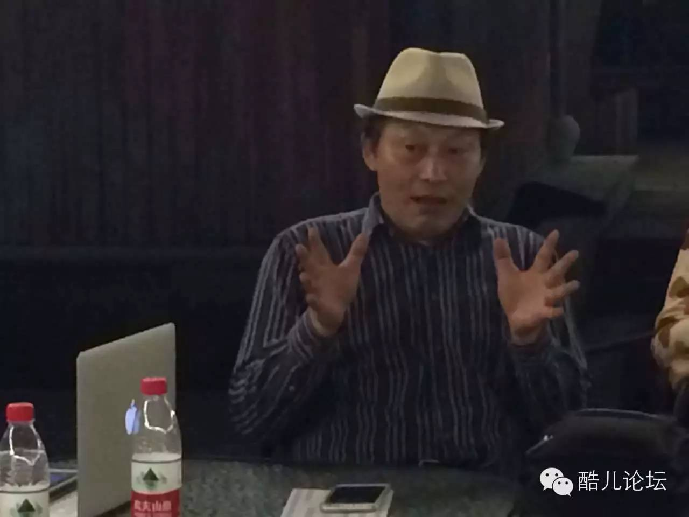
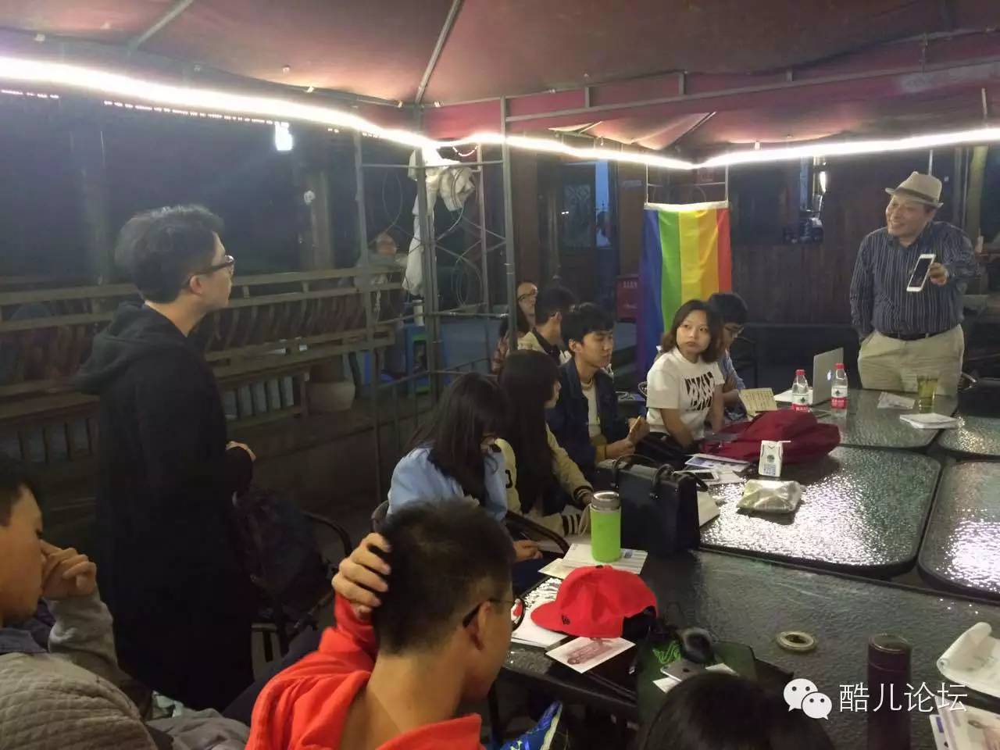

干货 | 关于性，你可曾想过这些？彭教授沙龙总结与讲稿
彭晓辉教授
浙大性学沙龙
图文总结与全文讲稿
酷儿论坛 × 新金赛
15
Oct,2015
彭教授首先进行了一个小时的讲座，在这部分他为我们介绍了性学的发展和他个人的研究历程，并为我们分析了性的背后的生物学、心理学、社会学的知识，尤其是社会对性的影响，特别是对性少数人群的影响。

“对性感兴趣”
临床医学出身的彭教授，在毕业后没有选择行医，而是选择到华中师范大学执教，研究动物行为学。对于选择性学的原因，他对我们说：“其实性学我相信在座的每一位，都对性感兴趣，要不然你们今天不会报名来了，你们敢拍着你的胸口说，我对性不感兴趣吗，不可能。或多或少都感兴趣，只是强度而已，或者说你感兴趣的领域和方向内容，可能我们有所差异。”
时值大学性教育兴起，彭教授便首先开设了一门《性生物学》课程，和性的生理、结构和功能、进化相关的一切都和此相关。同时，他也继续进修了社会学、心理学、哲学等课程，全方位了解不同学科中性相关的知识，进而系统地研究性学。
“同性恋是病理的状态的话，不是咱们中国固有文化的认知，是西方的精神病学的认知起始的”
性心理学是性学的开端，标志性事件是1886年奥地利司法精神病学家克拉夫特-埃宾写了一本《性精神病态》，其中首次把同性恋群体以一种病态的形式确定下来。这种病态观取代了宗教例如基督教所确立的同性性行为的罪恶观，并用医学建构出了同性恋这一群体。
为什么会有这样的性保守主义甚至性禁锢主义呢？彭教授认为，其背后是性资源分配不均的问题。“个体与个体之间争夺性资源就是决斗，群体与群体之间争夺性资源就是械斗，阶层与阶层之间争夺性资源就是挤压，如果是一夫多妻制，就意味着在男权社会，在父系社会，权贵就可以挤压，上层挤压下层，以此类推，最后挤压的结果就是底层的男人成了剩男。”
而性资源的问题，首先是生存资料的问题。”历代历朝都没有解决生活资料均衡分配的问题，就导致了性资源的不均衡配置，于是政府就要采用性保守主义的政策，让老百姓要克制、要节欲，所以宗教就是这么来的，避免人之间的冲突就要靠节欲。”所以，解决性禁锢和性保守的局面，根本上要先解决生活资料的均衡配置，让人人能够体面地生存。

“处女膜是属于宗教道德的一种俗语，应该把处女膜改成阴道口环形粘膜皱襞，这才是规范的学术术语，这个跟个人的品行没有任何关系。"

为了区别生殖行为与性欲行为，彭教授提出了性系统的概念，以此来表明它们从生理基础上就是不同的。两套系统，在主导器官和功效上有很大的不同。“性不仅是发生在两腿之间，也发生在两耳之间”，这是彭教授一直强调的内容。
但是这两者却承受了不同的道德评价。生殖被认为是人性的，而性则被认为是兽性的，彭教授认为恰恰相反：以享受愉悦、幸福为主要目的的性才是人性的，而以传宗接代为目的的生殖才是兽性的。愉悦机制是人类长相厮守的基础，反对愉悦实际上就是反人类。
所以，性不应该承担更多的道德评判，彭教授认为“只要是成年人，只要自主意愿，只要私密，只要无伤，不伤自身也不伤对方，不造成负面后果，比方说不造成意外怀孕，比方说不造成性疾病，那么这种性接触就是自己的私人权利，他人无权干涉。”
在这里，彭教授带领大家一起念了三遍“阴道口环形粘膜皱襞”和“阴道口粘膜皱襞”，就像在排练《阴道独白》话剧一般，帮助大家破除处女膜的道德枷锁。
-柏拉图精神恋爱、无性恋
柏拉图式的精神恋爱我的理解是性保守主义下的一种谎言。
无性恋是不可能没有性欲的，无性恋是不想有人际之间的性接触而已，但是无性恋照样有性梦。
-自慰
自慰的性行为，是同性性接触还是异性性接触啊？你们回答我？自己把自己作为性对象？究竟他是同性还是异性呐？绝对的同性嘛。
自慰是自己施加给自己的性刺激，他首先要想着自己的愉悦，对不对？所以这里面是分不清楚他的他的性倾向究竟是同性还是异性。

-性教育
我已经培训了40多所大学，把我二十多年的积累毫无保留地全给他培训了，我找了钱，找了两批钱，这笔86万多，14万美元。明年结束又培训了二十多所。这二十多所至少可以成功十所，上次二十多所（从）11、12年开始现在已经成功了十多所，把我的这一套教给他了，只能这么做。除非，习x近x平重视了，把我叫去了，“彭晓辉啊，你该抓这个事儿啦。”那他一句话，只要这句话，够了，其他人不敢不做，那我现在当教育部长是最好的。习x近x平要命令我当教育部长，那我睡着了都能笑醒。
-处女膜
处女膜是男权社会中间的有意识创造的绑架女人的一个紧箍咒。所以我们要破除男权文化，要实现男女平等，首先要破除掉处女膜。那么我说的那个理想主义说法，自慰自己把处女膜捅破，你可以明确地和男人说：“你爱我，你就要接受我自己把处女膜弄破了。我就弄破了，你看着办，你爱不爱随你。”
-性观念
如果我们实现了人人的性权利就意味着性需要得到了一定程度的宣泄，我们的身心都得到了解脱和解放，那这才叫和谐，只是说你在实现你的性需要的过程中，你不要伤害任何人ok，你就是正当的，就是私权利。无论是性多数还是性少数，无论是异性恋、同性恋、双性恋，还是无性恋，都按照自己的生活形态，生活需求去和谐生存，勇于主张自己的正当权利，我的权利我该拿回来，你不能剥夺我，但是同时我尊重你的权利，我维护你的权利，ok，这才是和谐。
-性安全
肛交是一种高危性行为，传播艾滋的可能性更高，所以男同会遭受艾滋病的污名化。MSM人群中，异性恋的绝对人口可能更多。
点击“阅读原文”获取沙龙分享全文记录，密码: 73y7